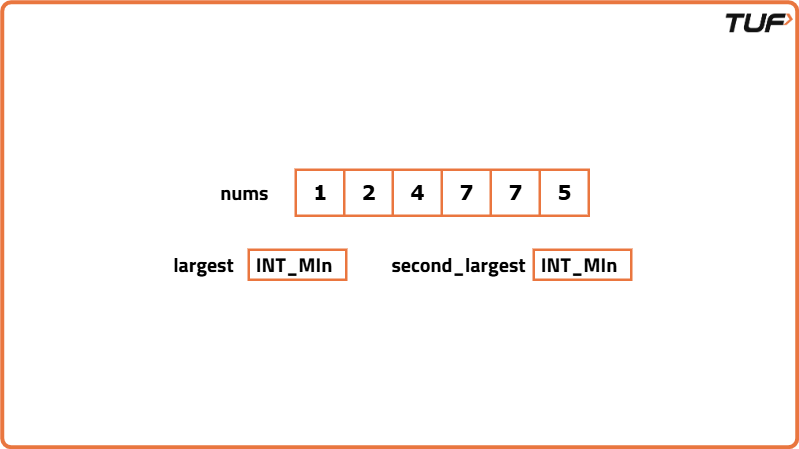
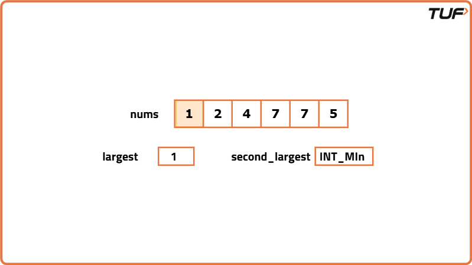
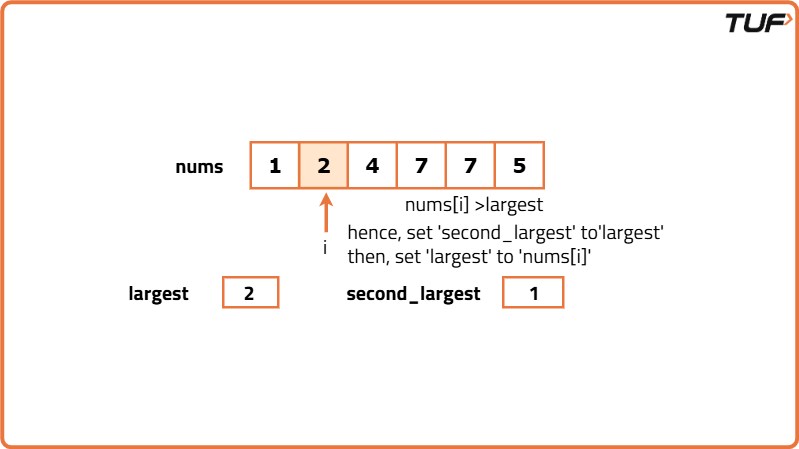
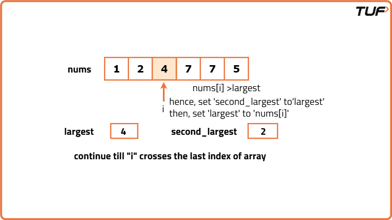
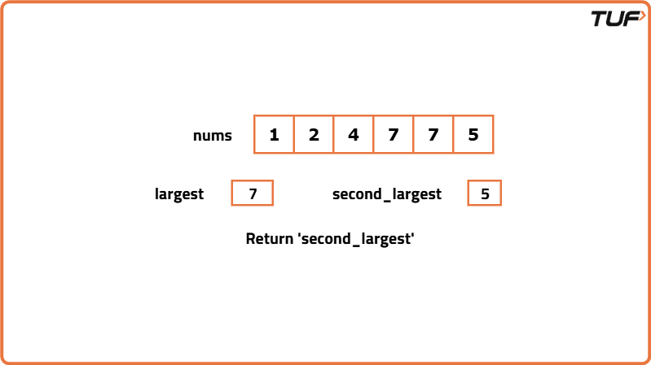

Find Second Smallest and Second Largest Element in an array
Problem Statement: Given an array, find the second smallest and second largest element in the array. Print ‘-1’ in the event that either of them doesn’t exist.
Examples
Example 1: Input: [1, 2, 4, 7, 7, 5] Output: Second Smallest : 2 Second Largest : 5 Explanation: The elements are sorted as 1, 2, 4, 5, 7, 7. Hence, the second smallest element is 2, and the second largest element is 5. Example 2: Input: [1] Output: Second Smallest : -1 Second Largest : -1 Explanation: Since there is only one element in the array, it is both the largest and smallest element. Therefore, there is no second smallest or second largest element present.
Disclaimer: Here is the practice link to help you assess your knowledge better. It's highly recommend trying to solve it before looking at the solution.
Brute Force
Algorithm
- Sort the array in ascending order.
- The element at the second index (index 1) is the second smallest element.
- The element at the second index from the end (index length-2) is the second largest element.
Code
#include<bits/stdc++.h>
using namespace std;
// Function to find the second smallest and second largest elements in the array
void getElements(int arr[], int n)
{
// Edge case when the array has less than 2 elements
if(n == 0 || n == 1)
cout << -1 << " " << -1 << endl; // Print -1 for both second smallest and second largest if the array has less than 2 elements
// Sort the array to easily find the second smallest and second largest elements
sort(arr, arr + n);
// Second smallest element is at index 1 after sorting
int small = arr[1];
// Second largest element is at index n-2 after sorting
int large = arr[n - 2];
// Output the second smallest and second largest elements
cout << "Second smallest is " << small << endl;
cout << "Second largest is " << large << endl;
}
int main()
{
// Initialize the array with elements
int arr[] = {1, 2, 4, 6, 7, 5};
// Calculate the size of the array
int n = sizeof(arr) / sizeof(arr[0]);
// Call the function to find and print the second smallest and second largest elements
getElements(arr, n);
return 0;
}Complexity Analysis
Time Complexity: O(N log N), for sorting the array.
Space Complexity: O(1), as we are using a constant amount of space for variables.
Better Approach
Algorithm
- Perform a single traversal to find the smallest and largest elements in the array.
- After that, traverse the array again to find the element just greater than the smallest element (this will be the second smallest).
- Similarly, find the element just smaller than the largest element (this will be the second largest).
Code
#include<bits/stdc++.h>
using namespace std;
// Function to find the second smallest and second largest elements in the array
void getElements(int arr[], int n)
{
// Edge case: when the array has less than 2 elements
if (n == 0 || n == 1)
cout << -1 << " " << -1 << endl; // If only one element, print -1 for both second smallest and second largest
// Initialize variables to track the smallest, second smallest, largest, and second largest elements
int small = INT_MAX, second_small = INT_MAX;
int large = INT_MIN, second_large = INT_MIN;
int i;
// Find the smallest and largest elements in the array
for (i = 0; i < n; i++) {
small = min(small, arr[i]); // Update the smallest element
large = max(large, arr[i]); // Update the largest element
}
// Find the second smallest and second largest elements
for (i = 0; i < n; i++) {
// If the current element is smaller than second_small and not equal to the smallest, update second_small
if (arr[i] < second_small && arr[i] != small)
second_small = arr[i];
// If the current element is larger than second_large and not equal to the largest, update second_large
if (arr[i] > second_large && arr[i] != large)
second_large = arr[i];
}
// Output the second smallest and second largest elements
cout << "Second smallest is " << second_small << endl;
cout << "Second largest is " << second_large << endl;
}
int main()
{
// Initialize the array with elements
int arr[] = {1, 2, 4, 6, 7, 5};
// Calculate the size of the array
int n = sizeof(arr) / sizeof(arr[0]);
// Call the function to find and print the second smallest and second largest elements
getElements(arr, n);
return 0;
}Complexity Analysis
Time Complexity: O(N), we do two linear traversals in our array.
Space Complexity: O(1), as we are using a constant amount of space for variables.
Optimal Approach
Algorithm
- We will need four variables: small, second_small, large, and second_large. Initialize small and second_small to INT_MAX, and large and second_large to INT_MIN.
- Second Smallest Algorithm:
- If the current element is smaller than 'small', update the values of second_small and small.
- Else if the current element is smaller than 'second_small', update the value of second_small.
- After traversing the array, the second smallest element will be stored in the variable second_small.
- Second Largest Algorithm:
- If the current element is larger than 'large', update the values of second_large and large.
- Else if the current element is larger than 'second_large', update the value of second_large.
- After traversing the array, the second largest element will be stored in the variable second_large.





Code
#include<bits/stdc++.h>
using namespace std;
// Function to find the second smallest element in the array
int secondSmallest(int arr[], int n) {
// Edge case: if the array has fewer than 2 elements
if (n < 2)
return -1;
int small = INT_MAX;
int second_small = INT_MAX;
// Loop through the array to find the second smallest element
for (int i = 0; i < n; i++) {
// Update the smallest and second smallest values
if (arr[i] < small) {
second_small = small;
small = arr[i];
}
else if (arr[i] < second_small && arr[i] != small) {
second_small = arr[i];
}
}
return second_small; // Return the second smallest element
}
// Function to find the second largest element in the array
int secondLargest(int arr[], int n) {
// Edge case: if the array has fewer than 2 elements
if (n < 2)
return -1;
int large = INT_MIN, second_large = INT_MIN;
// Loop through the array to find the second largest element
for (int i = 0; i < n; i++) {
// Update the largest and second largest values
if (arr[i] > large) {
second_large = large;
large = arr[i];
}
else if (arr[i] > second_large && arr[i] != large) {
second_large = arr[i];
}
}
return second_large; // Return the second largest element
}
int main() {
// Array of elements
int arr[] = {1, 2, 4, 7, 7, 5};
// Calculate the size of the array
int n = sizeof(arr) / sizeof(arr[0]);
// Find the second smallest and second largest elements
int sS = secondSmallest(arr, n);
int sL = secondLargest(arr, n);
// Output the results
cout << "Second smallest is " << sS << endl;
cout << "Second largest is " << sL << endl;
return 0;
}Complexity Analysis
Time Complexity: O(N), we do two linear traversals in our array.
Space Complexity: O(1), as we are using a constant